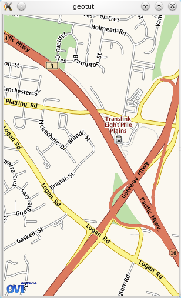

To begin with, we will start defining the map widget, which is the central part of the application's user interface. Enough of the map widget will be defined here to work satisfactorily on most desktop platforms -- full consideration for mobile use will be made later along with other parts of the application.
The Location module provides the QGraphicsGeoMap which is a simple, easy way to insert maps into a QGraphicsScene. Since we're going to be extending the map later, we'll create a subclass of QGraphicsGeoMap called GeoMap, as below:
class GeoMap : public QGraphicsGeoMap
{
Q_OBJECT
public:
GeoMap(QGeoMappingManager *manager, MapsWidget *mapsWidget);
~GeoMap();
private:
MapsWidget *mapsWidget;
};
GeoMap::GeoMap(QGeoMappingManager *manager, MapsWidget *mapsWidget) :
QGraphicsGeoMap(manager), mapsWidget(mapsWidget)
{
}
And next we define a QWidget subclass, MapsWidget, which handles the creation of QGraphicsView and QGraphicsScene to put the GeoMap into. We make use of the Pimpl idiom on this class, since (as we will see) it will grow later to have a large complement of private data members, and some of these have naming conflicts with public methods.
class MapsWidgetPrivate;
class MapsWidget : public QWidget
{
Q_OBJECT
public:
MapsWidget(QWidget *parent = 0);
~MapsWidget();
public slots:
void initialize(QGeoMappingManager *manager);
private:
MapsWidgetPrivate *d;
};
We perform the creation of the QGraphicsScene and GeoMap in the initialize() method:
class MapsWidgetPrivate
{
public:
GeoMap *map;
QGraphicsView *view;
};
void MapsWidget::initialize(QGeoMappingManager *manager)
{
d->map = new GeoMap(manager, this);
QGraphicsScene *sc = new QGraphicsScene;
sc->addItem(d->map);
d->map->resize(300, 480);
d->view = new QGraphicsView(sc, this);
d->view->setVisible(true);
d->view->setInteractive(true);
d->map->setCenter(QGeoCoordinate(-27.5796, 153.1));
d->map->setZoomLevel(15);
}
Doing this in the constructor, while possible, is not the preferred approach, as the QGeoMappingManager may not be available until the user has chosen it, or until a network connection is available. This is especially important in mobile environments, as we'll see later.
To get an instance of QGeoMappingManager we use the list of service providers available in QGeoServiceProvider::availableServiceProviders(). Service providers provide the ability to fetch and draw maps, search for locations, get directions, and a variety of other tasks.
To test out the MapsWidget we just wrote, we can simply get the first available service provider in the main() function, as follows:
int main(int argc, char *argv[])
{
QApplication a(argc, argv);
MapsWidget w;
w.show();
QList<QString> providers = QGeoServiceProvider::availableServiceProviders();
QGeoServiceProvider *serviceProvider = new QGeoServiceProvider(providers[0]);
w.initialize(serviceProvider->mappingManager());
return a.exec();
}
If you compile and run the code so far, you should see a window appear containing a street map of Eight Mile Plains, in Queensland, Australia, rendered by your platform's default geo service provider.

Next we'll add some basic pan and zoom capability to the map widget. Like most other classes in Qt, QGraphicsGeoMap allows mouse and keyboard events to be handled by private methods.
Into the private section of the GeoMap declaration we add:
bool panActive; void mousePressEvent(QGraphicsSceneMouseEvent *event); void mouseReleaseEvent(QGraphicsSceneMouseEvent *event); void mouseMoveEvent(QGraphicsSceneMouseEvent *event);
And their definitions:
void GeoMap::mousePressEvent(QGraphicsSceneMouseEvent *event)
{
panActive = true;
event->accept();
}
void GeoMap::mouseReleaseEvent(QGraphicsSceneMouseEvent *event)
{
panActive = false;
event->accept();
}
void GeoMap::mouseMoveEvent(QGraphicsSceneMouseEvent *event)
{
if (panActive) {
QPointF delta = event->lastPos() - event->pos();
pan(delta.x(), delta.y());
}
event->accept();
}
These three short methods are enough to add basic panning support to the map. The panning method is a simple mouse-locked one, and moving long distances on a touch screen with it can get quite tedious. Many map applications now make use of "kinetic" panning for a better user experience, especially on touch devices, but in the interests of simplicity, we'll save that for other examples.
Next, to add zoom support on the mouse scrollwheel:
void GeoMap::wheelEvent(QGraphicsSceneWheelEvent *event)
{
qreal panx = event->pos().x() - size().width() / 2.0;
qreal pany = event->pos().y() - size().height() / 2.0;
pan(panx, pany);
if (event->delta() > 0) { // zoom in
if (zoomLevel() < maximumZoomLevel()) {
setZoomLevel(zoomLevel() + 1);
}
} else { // zoom out
if (zoomLevel() > minimumZoomLevel()) {
setZoomLevel(zoomLevel() - 1);
}
}
pan(-panx, -pany);
event->accept();
}
This method is a little more complicated. To provide a suitable zoom feel, we have to actually combine panning with zooming, so that the user's point of interest (the mouse cursor) remains in the same part of the view. So, we actually pan the mouse cursor's location into the center, then adjust the zoom level, then pan back at the end.
Another important basic feature is the ability to render icons on the map to represent points of interest. The QGeoMapPixmapObject class provides most of the functionality necessary to achieve this, and we'll use a subclass of it in similar vein to our GeoMap, above.
For our application, we want to deal with 6 different kinds of icons:
Once again we make use of the Pimpl idiom to separate the private data members from the interface:
class MarkerPrivate;
class Marker : public QGeoMapPixmapObject
{
Q_OBJECT
public:
enum MarkerType {
MyLocationMarker,
SearchMarker,
WaypointMarker,
StartMarker,
EndMarker,
PathMarker
};
explicit Marker(MarkerType type);
inline MarkerType markerType() const { return m_type; }
void setMarkerType(MarkerType type);
private:
MarkerPrivate *d;
};
So we can construct Marker instances of different types, but we need QPixmaps to represent each one. In our implementation we will simply use a switch statement to map MarkerTypes to QPixmaps.
class MarkerPrivate
{
public:
Marker::MarkerType type;
};
Marker::Marker(MarkerType type) :
QGeoMapPixmapObject()
{
setMarkerType(type);
}
void Marker::setMarkerType(MarkerType type)
{
QString filename;
QPoint offset;
int scale;
d->type = type;
switch (d->type) {
case MyLocationMarker:
filename = ":/icons/mylocation.png";
break;
case SearchMarker:
filename = ":/icons/searchmarker.png";
break;
case WaypointMarker:
filename = ":/icons/waypointmarker.png";
break;
case StartMarker:
filename = ":/icons/startmarker.png";
break;
case EndMarker:
filename = ":/icons/endmarker.png";
break;
case PathMarker:
filename = ":/icons/pathmarker.png";
break;
}
if (d->type == MyLocationMarker) {
offset = QPoint(-13,-13);
scale = 25;
} else {
offset = QPoint(-15, -36);
scale = 30;
}
setOffset(offset);
setPixmap(QPixmap(filename).scaledToWidth(scale, Qt::SmoothTransformation));
}
The icon PNG images can be found in the examples/mapsdemo/icons directory in the QtMobility distribution. All we have to do to have this working is simply add the PNG icons to a .qrc file and add it to the project.
The QGraphicsGeoMap::addMapObject method is used to add markers to a map. We can add a call to create a marker at our starting point into MapsWidget::initialize() as a demonstration:
// in MapsWidget::initialize() Marker *me = new Marker(Marker::MyLocationMarker); me->setCoordinate(QGeoCoordinate(-27.5796, 153.1)); geoMap->addMapObject(me);
Build and start the application, and we now have a "My Location" icon in the centre of the initial view.
This now concludes the basic functionality of the map widget. We'll be making a few modifications and improvements to it as we go along, but the basic skeleton will remain the same.
Next, we'll add a basic GUI around the map widget, and the ability to search for locations like addresses.